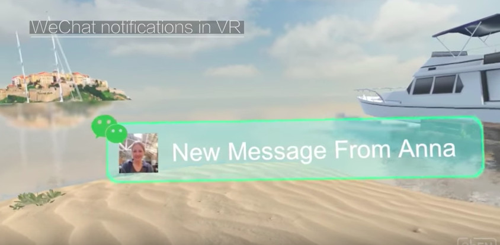

文章来源： 更新时间：2018-06-05 09:23:11
除了做基础技术的研究外，腾讯曾表示要通过业务驱动来推动各种应用场景的人工智能化。
结合腾讯的主营业务，也不难猜到未来公司要在游戏、社交、内容和平台工具型四大应用方向发力。
尤其是在社交领域，去年扎克伯格曾表示要推出VR版的Facebook，并展示了虚拟人物形象工具Oculus Avatars；今年7月，Facebook表示Facebook AR工作室将与美图合作，向其提供三款AR相机特效。如今，腾讯也要有所行动了。
7月18日晚间，人工智能初创公司ObEN宣布获得500万美元战略投资。该轮融资由腾讯领投，CMC董事长黎瑞刚及峰尚资本跟投。投融资信息平台crunchbase的数据显示，目前ObEN共完成四轮融资，总金额达到1370万美元。此前的投资人还包括S如山资本、软银韩国风险投资公司和HTC VIVE X等。
公开资料介绍，ObEN创办于2014年，可以通过构建个性化的虚拟声音、形象和个性来创造用户的人工智能虚拟形象，并帮助用户在新兴的数字世界中存储、管理、运营他们的虚拟形象。也就是说，ObEN可以利用人工智能工具，根据用户的照片和声音创建虚拟形象，从而让用户有不同的AR、VR社交体验。
以前ObEN主要帮助游戏玩家创建虚拟形象，如今公司将重点转向于帮助明星打造虚拟形象。通过该虚拟形象，明星可以与粉丝进行实时互动。未来某一天，也许粉丝还可以向明星寻求建议并得到相应的反馈。另外，这一虚拟形象不仅与明星长的非常像，而且说话的方式也是一样的。总的来说，这样一个虚拟形象总好过于一个聊天机器人。
据介绍，ObEN还首次融合了语音、计算视觉以及自然语言处理技术，研发了全栈式虚拟明星所需要的虚拟声音、三维形象及个性化技术。如今ObEN正在打造一个全新的商业平台。在这里，明星和粉丝可以通过个性化的人工智能在移动端、增强现实、虚拟现实以及智能设备、物联网等平台上直接互动。ObEN的个性化的人工智能产品预计将在今年晚些时候发布。
而最新一轮融资，将被用于加速ObEN的产品开发，并帮助推动其明星人工智能版权平台广泛应用到各类数字平台上。对于这次合作，腾讯投资的执行董事姚磊文说道，ObEN将带来由明星人工智能驱动的全新娱乐方式和内容。
早前，ObEN就曾表示要做“每个人的人工智能社交平台”。在这方面，公司已经先后进行过多次布局。
在今年3月的HTC Vive生态圈大会上，ObEN宣布与HTC Vive合作，开发了一个让用户一起VR游玩、VR“K歌”的微信小程序。在这一程序中，VR用户可以向好友发送邀请；接到邀请的好友可以上传自拍和音频，最终使用建成的形象与邀请者一起漫步海滩，或者参观景点。
随后的4月底，ObEN推出了一个整合有VR社交体验的微信聊天服务短片，当然用户需要戴上HTC Vive头显。在短片中，用户需要先拍一张自拍，上传到微信制作虚拟形象，然后带上HTC Vive，就可以接收微信好友发来的信息，并可以用语音直接进行回复。未来，拥有VR、AR功能的微信或许又可以收割大量亚洲用户。

6月底，ObEN又宣布与韩国SM娱乐成立合资公司幻星有限公司（AI Stars）。据悉，ObEN要利用人工智能技术为SM娱乐旗下的知名艺人制作AI虚拟形象，而幻星有限公司正是管理这些”AI明星“的经纪公司。
这次腾讯领投ObEN，是否可以进一步推动公司社交业务的人工智能化。如今，各大公司不仅在忙于建立人工智能实验室，而且像Facebook这样的公司已经成立了更具象的Facebook AR实验室。另外，据说苹果很快就会推出ARKit平台。未来，腾讯是否还会成立单独的AR实验室，进一步布局社交AI业务？
地址：广东省广州市天河区88号电话：400-123-4657传真：+86-123-4567
版权所有：Copyright © 2012-202X 某某公司 版权所有 粤IP*********